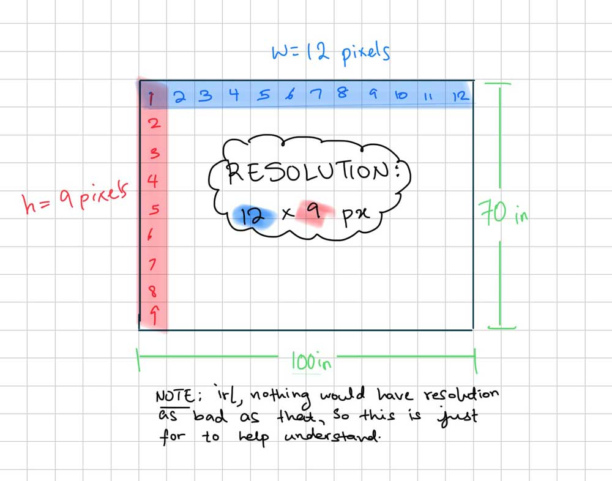

Filmography
Introduction
So you wanna learn about filmmaking. Filmmaking is the best. It’s such an art, it’s something we see every day from TV shows, movies, TikTok tutorials, YouTube vlogs… it’s in a lot of the media we consume. As amateurs, we don’t realize all the thought that’s put into switching angles, lighting, sound quality, background sounds, etc. But when you learn the basics, you gain a huge appreciation for it. Recognizing good filmography makes TV shows and such more enjoyable to watch because you know the significance of a specific angle or just the thoughtfulness put into it. I love filmography if you can’t tell.
Basic Rules
With filmography, deliberation is key. If you’re going to have close-up shots, or a specific angle, it must be for a reason. The quick tips below are like the default of having quality filmography; if you do something different or opposing, it must be for a reason. Now, let’s get into these quick tips on the different aspects of filmography.
Background
- Omit unnecessary things in the background. If it’s not a deliberate set or a prop, it’s a distraction.
- Have a clear view of the elements involved. i.e., people that are supposed to be in the frame must be there fully unless deliberately not.
- No bright things that would distract from the main action. Brightness draws the attention (that’s why spotlights exist). Examples of this would be a window in the background.
- Reduce empty space that is unnecessary. If you’re not trying to show a perspective or far angle, indulge in close-up shots
Motion
- Reduce the amount of movement. It’s better to cut scenes than to shift the camera back and forth (of course, unless deliberately).
- Have smooth & particular motions throughout. If you want quality, you absolutely cannot hold the camera with your hands. Use a tripod or a gimble.
- Keep the screen straight and not slanted.
Sound
- Keep the sound at a constant level. Don’t jump scare or annoy your audience by having the sound constantly wavering.
- Omit unnecessary BG noises. Using a microphone can help with ensuring you have quality sound with outside noises blocked.
Angles
- Take note of angles and their impact/meaning on scenes. If you want to set the scene, do a faraway shot maybe. If you want to show dialogue, do a close-up of the person/people speaking.
- With angles, more angles = more perspective = more dynamic = more interesting. Put a lot of thought into the number of angles you could have and what they could mean. More angles can also mean multiple cameras.
Transition & Clips
- Make transitions blend.
- It’s alright to have a lot of clips, but it is important to put them together smoothly.
Action Clips
- Close-up shots ;)
- More angles
- Cut scenes to reduce back and forth of camera
Saving Digital Files
Part of digital media is uploading files in the most efficient manner. Films and videos can become very big files, so it’s important to know the basic breakdown of aspect ratio, resolution, and frame rate :). My notes on this are pretty hefty, so I will try to be as brief and concise as possible.
View this pdf for a copy of the notes.
Aspect Ratio
- Aspect ratio refers to the ratio of the screen width to the screen height. Modern standard is 16:9.
Resolution
- Resolution is the size of an image in pixels. It is expressed as width in pixels by height in pixels (ex. 1280 x 720 px). Here’s a diagram I drew to understand it better.
The more pixels an image has, the more detail and resolution it has.
- The current standard resolution is 1280 x 720 px aka 720p aka High Definition (HD). This is way higher than what the standard used to be.
- It is important to be aware of resolution because it’s what makes images detailed. However, there must be balance otherwise file sizes will be too big and would just take up download time. Some screens are also so small that high resolution wouldn’t even be perceptible. It would just be a waste to make the resolution so high.
Frame Rate
- A video is a series of still images (frames) shown in rapid succession.
- Frame rate refers to the amount of these frames shown per second (FPS = frames per second).
- 24 fps is the standard for movies and TV shows.
These file properties will help when deciding how to save videos you have made efficiently.